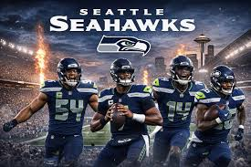

Football by Wilson Tonn
Football is a very interesting and fun sport to watch and play. Here is a fact about Football in 1972 the Miami Dolphins had a perfect season meaning they didnt lose a single game that they played. Here is another fact Football originated in 1869, but the NFL was introduced in 1920.
Did you know that the NFL started out with only 14 teams and only 2 of those teams are still around, but now there is 32 teams. Isn't that amazing! I love Football. American football features fascinating quirks, from its odd game-play statistics to the origins of its biggest traditions. The sport originated in 1869, but over a 60-minute standard game, players actually only spend about 11 minutes of actual time in motion.
